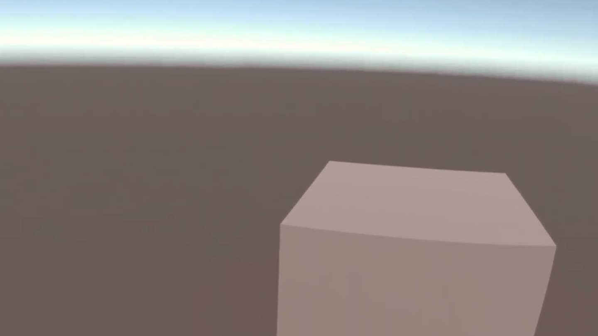
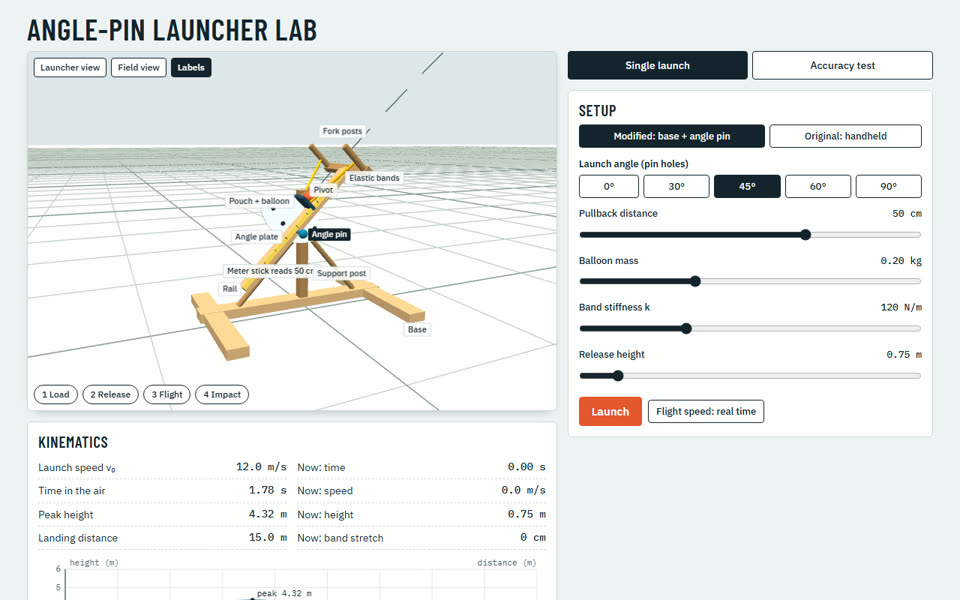

Wrong-note feedback
Play D instead of D♯ and the key you pressed flashes coral. It stays a dimmer coral while you hold it, never green, so it can't be mistaken for right.
Played DWanted D♯
I build mixed-reality apps and interactive websites, usually to teach something or to show how it works. I'm currently building a piano trainer for the Meta Quest 3.
A falling-notes video can't tell you that you played D instead of D♯, or that is your weakest one. PianoGlass can, while you play.
You sit at a real piano and the headset shows notes falling onto your real keys. The keyboard plugs into the headset over USB MIDI, so the app knows exactly which key you pressed and when, and can judge every note.
Every menu is Liquid Glass. The glass panels, colors and font on this page come straight from the app's code.
 Quest 3 · Nov 14
Quest 3 · Nov 14


Sep 14 to Nov 7 were recorded on a Quest 2, and the blue tint was a passthrough bug fixed later. Nov 14 is filmed through the Quest 3 lens with a phone. Now at 515 commits.
Play D instead of D♯ and the key you pressed flashes coral. It stays a dimmer coral while you hold it, never green, so it can't be mistaken for right.
Every note is judged Perfect within 40 ms, Great within 80, Good within 150, and shows how early or late you were.
After each try, the results card colors one box per bar by its worst accuracy, then suggests what to practice and loops it for you.
Pick a hand, set the tempo anywhere from 25% to 200%, and turn on the metronome, wait mode or memory fade. Try them.
Both hands · Tempo 100%
Does an app that listens to what a beginner plays, and corrects them in real time, help them learn a passage more accurately than a standard falling-notes app?
Each one is live. Physics, English, math and a team museum.

A 3D water balloon slingshot, before and after our group's modification. Set the angle, pullback and band stiffness, watch the forces and energy, and fire 20 shots from each launcher to compare accuracy.

A virtual museum on the right to mental health, with a lobby, five galleries and an exit room with resources. I built the site and curated the gallery on mental health and social media.

Game theory through the algebra behind it, from a penalty kick to a Prisoner's Dilemma simulator you can play round by round.

Tradition versus change in Chinua Achebe's novel, through quotes, characters and symbols.

Links The Other Wes Moore to real data about racism in Atlanta, the US and the world, with steps you can take.
From my AI class and my own experiments.
A Python port of the AP CS A Picture Lab, built on plain numpy arrays so students see how an image is stored before they start on machine learning. It has a pixel-grid inspector, a desktop app, tests, and a neural network design project where you pick a dataset and a network structure and defend each choice.
Finds every person in an image with a pre-trained YOLOv8 model, draws a box and confidence label on each one, and writes the total count on the picture.
Loads any webpage from a URL, splits it into chunks and has a Llama 3 model, running locally through Ollama, write a short summary, five bullet points and one takeaway.